Объектив
Дрыга Данила Олегович
Ф02 · линза · фокусное расстояние · диафрагма · ГРИП · аберрации
Вопросы для закрепления · Ф01
- Что такое аэрофотосъёмка?
- Из каких элементов состоит фотоаппарат?
- Какие бывают приёмники излучения?
- Зачем нужен объектив?
- Как получить цветное изображение?
Основные элементы фотоаппарата
- Объектив · затвор · матрица (ПИ)
- Процессор · устройство хранения
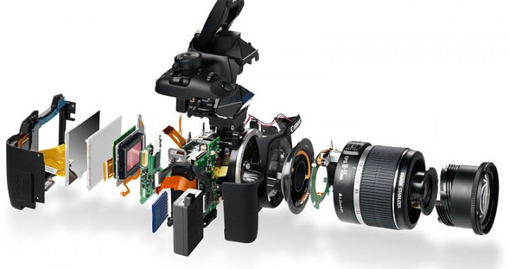
Свойства снимка складываются из свойств элементов ЦФК
Свет
Волна с постоянной скоростью в вакууме — или поток фотонов с энергией и нулевой массой.
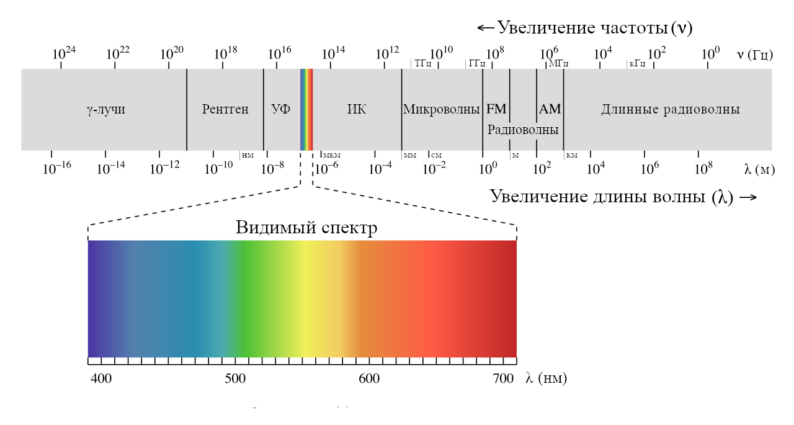
Физические свойства света
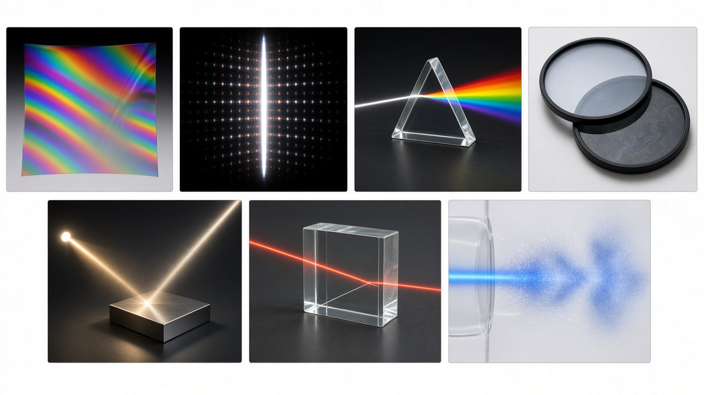
Объектив
Объектив — оптическое устройство, которое строит действительное изображение в плоскости приёмника излучения по закону центральной проекции.
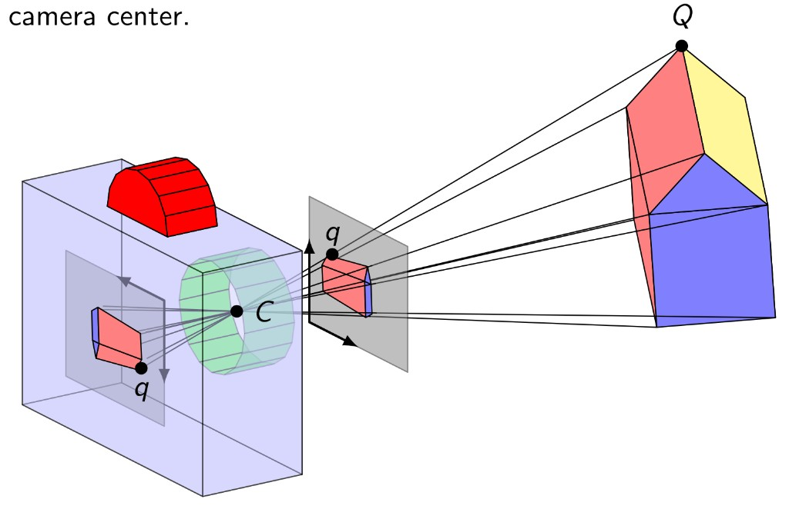
Центральная и ортогональная проекции
Центральное проецирование
Через каждую точку объекта и выбранный центр проецирования S проводят проецирующий луч. Центральная проекция точки — пересечение этого луча с плоскостью проекций.
Такую модель использует камера. Ортофотоплан получают уже вычислительным преобразованием центральных снимков.
Ортогональное проецирование
Это частный случай параллельного проецирования: проецирующие лучи параллельны друг другу и перпендикулярны плоскости проекций.
Параллельное проецирование получается, если центр S уводят в бесконечность: лучи становятся параллельными выбранному направлению.
Сравнение проекций
Сравнение проекций в пространстве
Глаз и камера
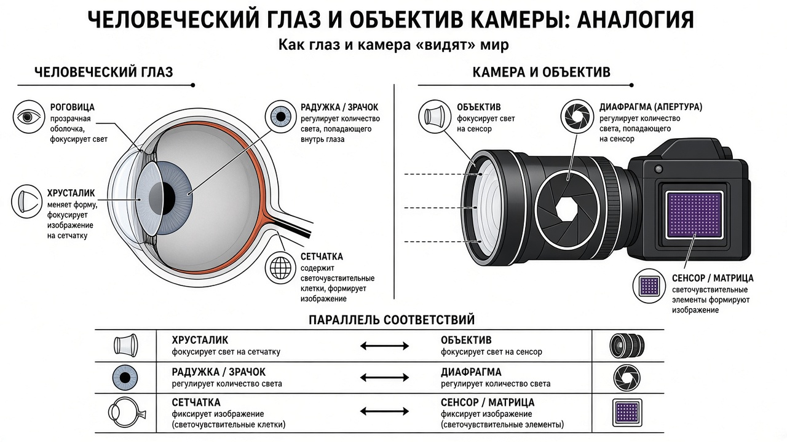
Аналогия помогает запомнить роли. Это не тождество: глаз перефокусируется непрерывно.
Из чего состоит объектив
- Линзы и/или зеркала — строят изображение.
- Диафрагма — ограничивает количество света.
- Оправа — держит всё в расчётном положении.
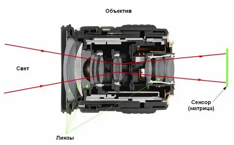
Параметры объектива
- Главное фокусное расстояние
- Диапазон диафрагменных чисел
- Светосила
- Угол поля зрения
- Разрешающая способность
- Уровень аберраций
Три способа формирования изображения
Построение изображения
Линза
Линза — прозрачное оптическое тело, ограниченное двумя преломляющими поверхностями, из которых хотя бы одна обычно сферическая.
Формула тонкой линзы (связь кривизны и фокусного расстояния)
1f = (n − 1)(1R₁ − 1R₂)
где f — фокусное расстояние, n — показатель преломления стекла, R₁ и R₂ — радиусы кривизны первой и второй поверхностей; знаки радиусов задают по выбранному правилу знаков
Основные элементы оптической системы
Типы линз
Главное фокусное расстояние
Главное фокусное расстояние f — расстояние от задней главной плоскости объектива H′ до заднего фокуса F′.
Фокусное расстояние снимка
Фокусное расстояние снимка (главное расстояние камеры, c) — расстояние от центра проекции S до плоскости снимка. В фотограмметрии именно его используют при пересечении лучей и построении модели.
f объектива = N′F′ (свойство оптики). c снимка = S → матрица (геометрия камеры). При ∞ они близки; c уточняют калибровкой.
Главное фокусное расстояние f′
Задний сопряжённый отрезок a′ — расстояние от задней главной плоскости H′ до плоскости резкого изображения. При фокусировке на бесконечность плоскость изображения совпадает с задней фокальной плоскостью, поэтому a′ = f′ ≈ f.
Предмет на бесконечности
a → ∞ ⇒ a′ = f′ ≈ f
где f′ — заднее фокусное расстояние от H′ до F′, f — главное фокусное расстояние объектива
Предмет на конечной дистанции
a′ = a · fa − f > f
изображение строится дальше фокальной плоскости; a′ уже не равно f
Оптика объектива
Сопряжённое фокусное расстояние
Сопряжённое фокусное расстояние — это расстояние a′ от задней главной плоскости H′ до плоскости резкого изображения предмета, сопряжённого с данной предметной дистанцией a.
Оно нужно, чтобы понять, куда именно должна встать матрица при фокусировке: не в фокус F′, а в точку изображения, сопряжённую с предметом.
Формула тонкой линзы
1f = 1a + 1a′
где f — фокусное расстояние, a — расстояние до предмета, a′ — сопряжённый отрезок изображения
Зачем a′
При макросъёмке и кольцах a′ растёт: объектив удаляют от матрицы, чтобы резкое изображение снова попало на приёмник.
Чем a′ не является
a′ равно f только для предмета на бесконечности. D — это диаметр входного зрачка, а не сопряжённое расстояние. a′ — не то же самое, что фокусное расстояние камеры в фотограмметрии.
Фокусное расстояние объектива
Фокусное расстояние объектива — оптическая характеристика самого объектива: расстояние от задней узловой точки объектива до главного фокуса F′, в котором сходятся лучи, падающие параллельно оптической оси.
Через F′ перпендикулярно оси проходит задняя фокальная плоскость. Это свойство объектива как изделия; оно не зависит от того, куда поставили матрицу.
Фокусное расстояние камеры (главное расстояние снимка)
В фотограмметрии фокусное расстояние снимка (часто тоже обозначают f, точнее — главное расстояние c) — геометрический параметр всей съёмочной системы: расстояние от центра проекции S (задней узловой точки) до плоскости снимка, где лежит матрица или плёнка.
Именно это расстояние используют в фотограмметрии при пересечении лучей и построении модели. Оно близко к фокусному объектива при фокусировке на бесконечность, но уточняется калибровкой и может отличаться из‑за вытяжки, допусков и положения матрицы. Сопряжённый отрезок a′ — другое: это куда попало резкое изображение при данной дистанции до предмета.
Постоянное и переменное фокусное расстояние
Объектив с постоянным фокусным расстоянием
Имеет одно значение f. В аэрофотоаппарате оно определяется калибровкой.
Объектив с переменным фокусным расстоянием
Группы линз перемещаются и изменяют f. Трансфокатор сохраняет фокусировку при изменении масштаба.
Кратность изменения фокусного расстояния
fmax / fmin
20–100 мм → 5×. Цифровой зум — интерполяция, а не изменение оптики.
Fix vs zoom
У зума обычно: хуже контраст, ниже светосила, больше вес, кадрирование только при сквозном визировании, цена.
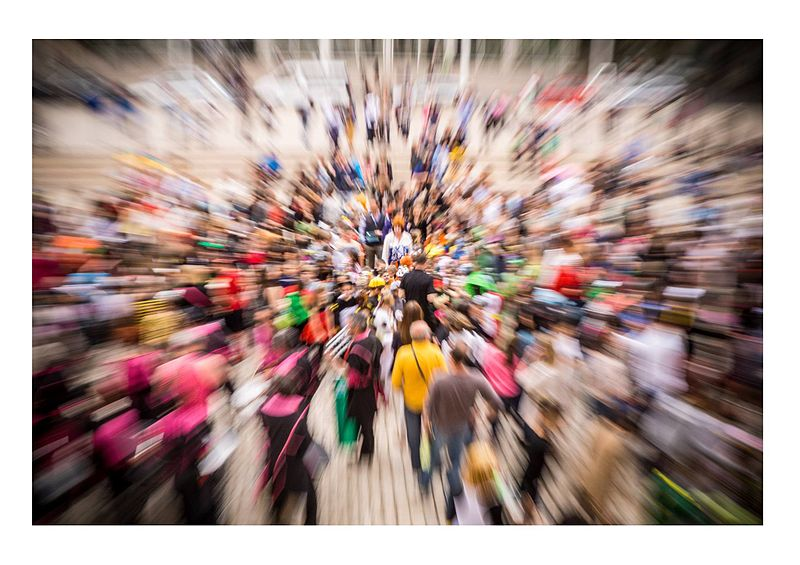
Поле зрения
2ω ≈ 2 arctg(d / 2f)d — сторона или диагональ кадра, f — фокусное, ω — половина угла поля
По углу поля зрения
| Эквивалентное фокусное расстояние | Группа | Типично |
|---|---|---|
| < 21 мм | сверхширокоугольные | архитектура |
| 21–35 мм | широкоугольные | ландшафт |
| 35–70 мм | нормальные | улица, документ |
| 70–135 мм | ближние теле | портрет |
| 135–300+ мм | телеобъективы | спорт, природа |
Таблица описывает угол поля зрения, а не физическое фокусное расстояние объектива.
Кроп-фактор
Кроп-фактор — отношение диагонали стандартного кадра 24×36 мм к диагонали используемого кадрового окна. Меняется поле зрения, а не физическое фокусное расстояние объектива.
кроп = d24×36 / dматрицыполе зрения уже, фокусное расстояние объектива не меняется
Кроп-фактор
Формат матрицы меняется при постоянном угле поля зрения β. Для кадра 24×36 мм (FF) принято f = 50 мм; для меньших матриц f уменьшается пропорционально ширине кадра lx.
Для калиброванной камеры точнее использовать главное расстояние c. При предмете на бесконечности c ≈ f.
Фокусировка (наводка на резкость)
— процесс регулирования положения объектива для достижения совпадения плоскости сопряжённого фокуса с плоскостью приемника излучения (плоскостью матрицы).
Автоматическая фокусировка
Камера измеряет резкость и перемещает линзы приводом.
Ручная фокусировка
Оператор перемещает линзы и совмещает плоскость резкости с объектом.
Фиксированная фокусировка
Положение линз задают при настройке камеры и во время съёмки не изменяют.
В фотограмметрической аэрофотосъёмке используют только фиксированную фокусировку. Это не то же самое, что объектив с постоянным фокусным расстоянием: способ фокусировки и возможность изменять фокусное расстояние — разные свойства.
Диафрагма
Диафрагма — элемент оптической системы, который ограничивает световой пучок. Меньшее отверстие увеличивает глубину резко изображаемого пространства, но усиливает дифракцию.
Глубина резко изображаемого пространства
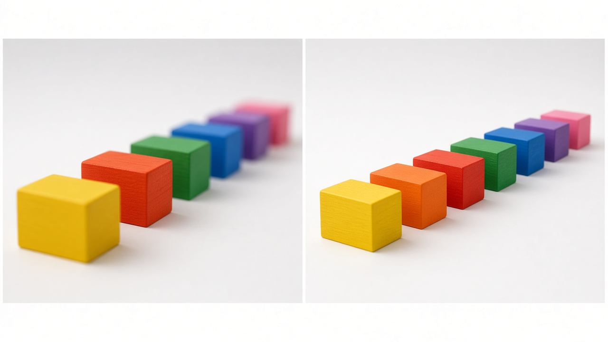
Дифракция
Относительное отверстие объектива
Относительное отверстие объектива — оптическая мера светопропускания объектива, отношение диаметра входного зрачка объектива к его заднему фокусному расстоянию.
Относительное отверстие
1n₀ = Df′
где D — диаметр входного зрачка, f′ — заднее фокусное расстояние, n₀ — диафрагменное число
Различают геометрическое и эффективное относительные отверстия. Фокусное входит в знаменатель: при большем f′ тот же поток распределяется по изображению большего линейного масштаба.
Диафрагменное число
Если принять диаметр входного зрачка равным единице, геометрическое относительное отверстие записывают так:
N = Df′ = 1k
Знаменатель относительного отверстия k называют диафрагменным числом (числом диафрагмы). Это отношение фокусного расстояния объектива к диаметру входного зрачка — величина, обратная относительному отверстию:
k = f′D = 1N
Параметр удобен для разметки шкал диафрагмы: на шкале целые и стандартные значения без дробей (1,4 · 2 · 2,8 · 4 · 5,6 · 8 · …).
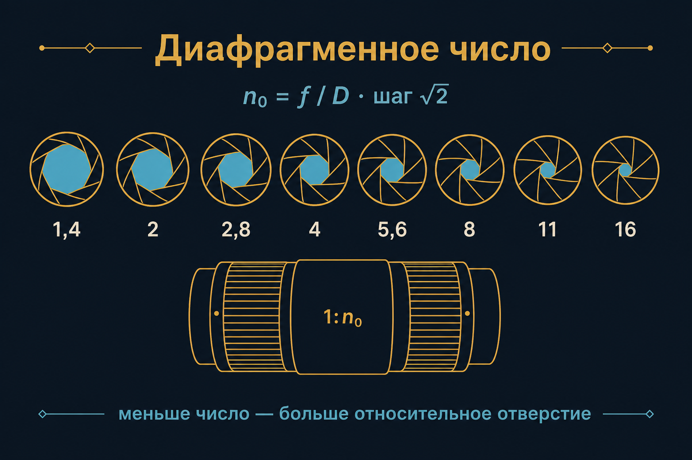
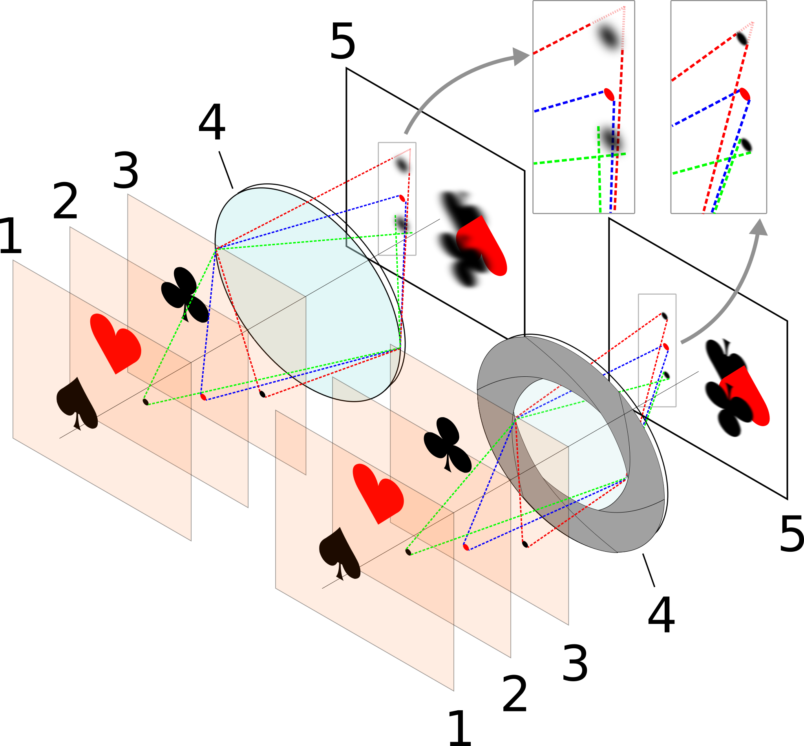
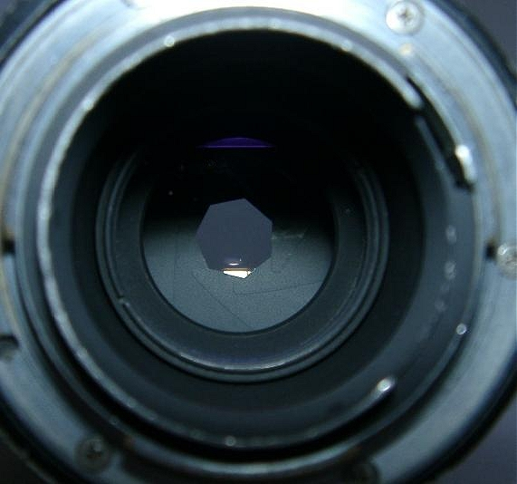
Диафрагма на практике
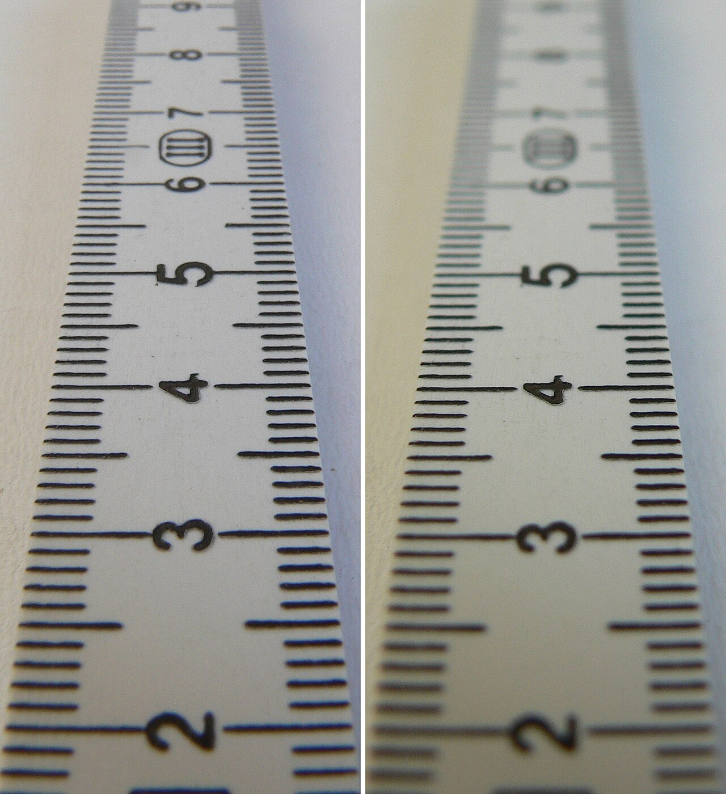
Ирисовая диафрагма
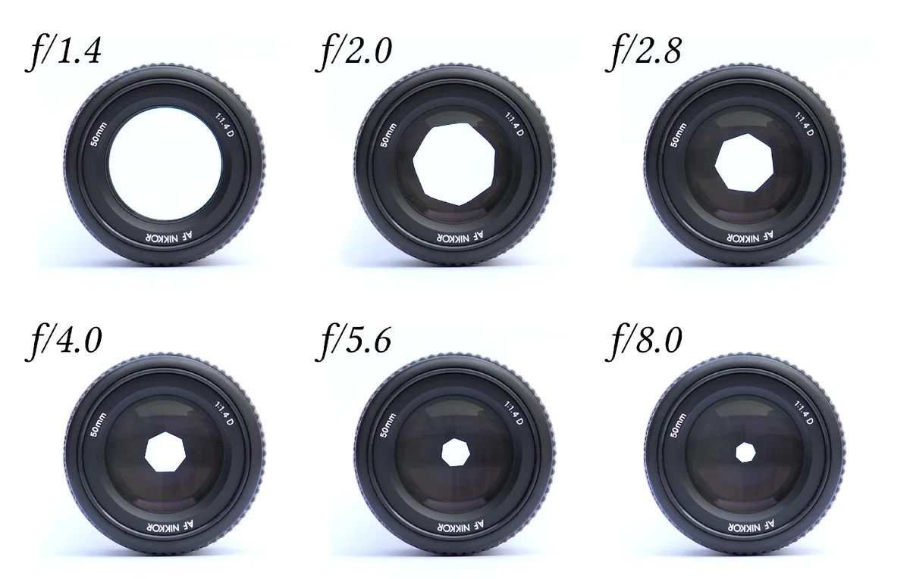
Лепестки уменьшают отверстие → растёт n₀, падает световой поток.
Ирисовая диафрагма · в движении
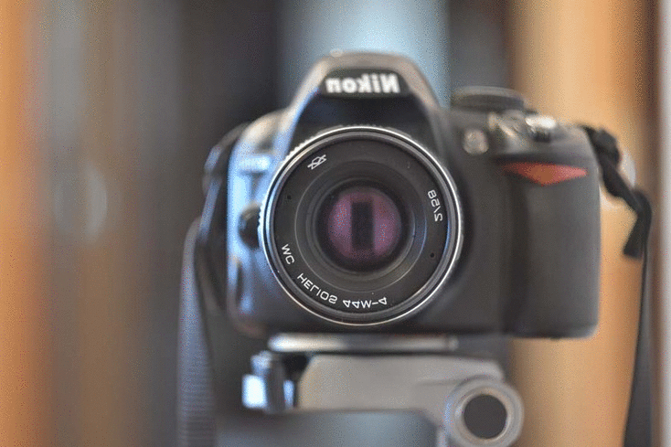
Видеозапись лепестков: диаметр отверстия меняется непрерывно.
Светосила
— величина, характеризующая светопропускание оптической системы, отношение освещённости построенного изображения к исходной яркости отображаемого объекта.
Q = E / BE — освещённость изображения, B — яркость объекта
Геометрическая светосила
S = πr²f² = πD²4f²
где r — радиус входного зрачка, D = 2r — его диаметр, f — фокусное расстояние
Эффективная светосила с учётом потерь
Sэф = τ · S
где τ — коэффициент пропускания объектива от 0 до 1
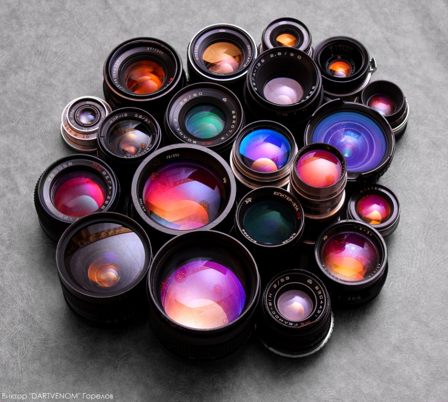
Диафрагменное число n₀
n₀ = f / Dшаг √2 · соседние значения — вдвое по свету
Меньше число n₀ — больше отверстие, больше света. Светосильными считают объективы 1:1,4 и ниже.
ГРИП
Расстояние вдоль оптической оси объектива между двумя плоскостями в пространстве предметов, в пределах которого объекты отображаются в сопряжённой фокальной плоскости субъективно резко.
Фокус-стекинг
Фокус-стекинг — съёмка серии кадров с разной плоскостью наводки и последующее объединение резких зон. Так получают кадр с большей эффективной ГРИП, чем даёт один снимок (часто в макросъёмке).
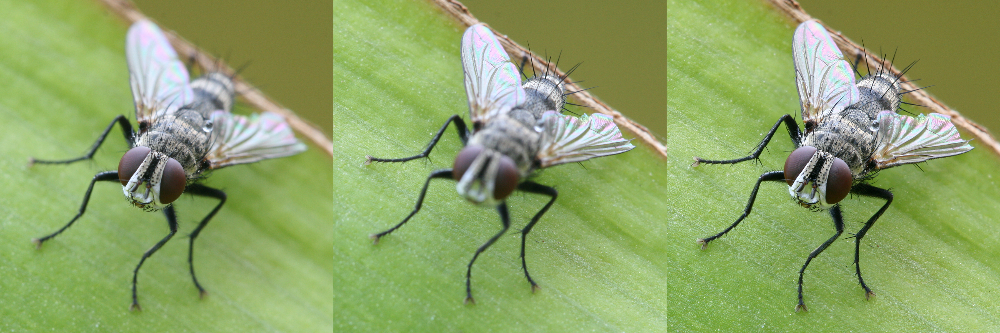
Источник иллюстрации: Wikimedia Commons. В аэрофотограмметрии обычно используют фиксированную фокусировку, а не стекинг.
Формулы ГРИП
Передняя граница
R₁ = R · f²f² − n₀ · f · c + n₀ · R · c
Задняя граница
R₂ = R · f²f² + n₀ · f · c − n₀ · R · c
при неположительном знаменателе R₂ → ∞
Глубина резко изображаемого пространства
ГРИП = R₂ − R₁
где R — дистанция фокусировки, f — фокусное расстояние, n₀ — диафрагменное число, c — допустимый кружок нерезкости
Диафрагменное число и ГРИП
Зелёная полоса показывает ГРИП. Золотая пунктирная линия показывает дистанцию фокусировки R. Допустимый кружок нерезкости c = 0,02 мм.
Гиперфокальное расстояние
Гиперфокальное расстояние H — дистанция фокусировки, при которой задняя граница ГРИП уходит в бесконечность.
Гиперфокальное расстояние
H = f²n₀ · c + f
где f — фокусное расстояние, n₀ — диафрагменное число, c — допустимый кружок нерезкости
При фокусировке на H
R₁ ≈ H2R₂ → ∞
передняя граница приблизительно равна H/2, задняя граница находится на бесконечности
Для фотографа
| Отверстие больше | Отверстие меньше | |
|---|---|---|
| n₀ на камере | меньше | больше |
| Свет | больше | меньше |
| Выдержка | короче | длиннее |
| ГРИП | меньше | больше |
| Аберрации | больше | меньше |
| Дифракция | меньше | больше |
Разрешающая способность объектива
Разрешающая способность — способность оптики раздельно изображать близкие детали. Её оценивают по пороговой кривой, по мире (штриховой тест-объект) или по частотно-контрастной характеристике.
Мира и пороговая кривая
На мире чередуются штрихи разной частоты. Порогом считают частоту, при которой контраст ещё различают. Результат обычно в лин/мм.
ФПМ / MTF
Функция передачи модуляции (MTF) показывает, какая доля контраста объекта сохраняется на данной пространственной частоте. Это полнее, чем один пороговый предел.
Зачем
Сравнивают объективы, выбирают рабочую диафрагму (аберрации vs дифракция) и оценивают пригодность системы для измерения мелких деталей.
Бленда
Трубка перед входным окном: отсекает посторонний свет. Родственна полевой диафрагме.
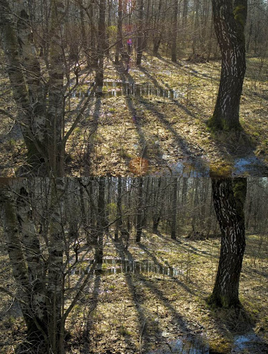
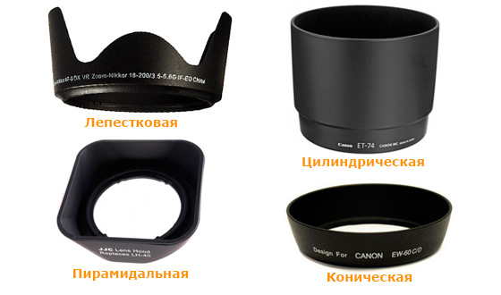
Макрообъектив
Макросъёмка — съёмка с большим масштабом изображения (часто около 1:1 и крупнее): мелкий предмет занимает заметную долю кадра. Макрообъектив рассчитан именно на короткую дистанцию и сохраняет резкость там, где обычный объектив уже «не тянет».
Масштаб
m = a′a
Отношение размера изображения к размеру предмета. При m = 1 предмет 10 мм занимает 10 мм на матрице.
Рабочая дистанция
От передней линзы до предмета. Минимальную дистанцию фокусировки в паспорте часто указывают от плоскости матрицы — это другое число.
Зачем отдельный объектив
Обычный объектив на близкой дистанции даёт сильные аберрации и падение резкости. Макрокорпус оптимизирован под большие a′.
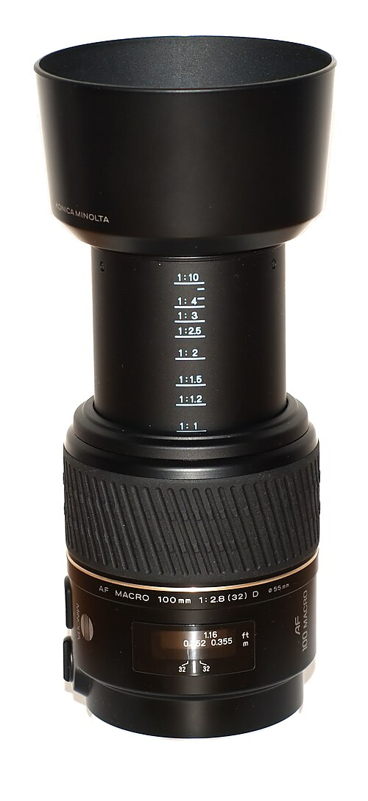
Удлинительные кольца
Удлинительное кольцо — полая вставка без линз между объективом и камерой. Оно отодвигает объектив от матрицы: резкое изображение близкого предмета снова попадает на приёмник, масштаб растёт.
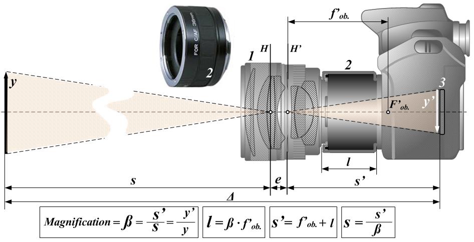
Что меняется
Растёт задний отрезок a′. Можно снимать ближе и с большим m обычным объективом.
Формулы
a′ = f(1 + m)
e ≈ m · f
e — добавочная вытяжка от положения «∞»
Экспозиция
kэксп ≈ (1 + m)²
при m = 1 нужно примерно в 4 раза больше света
Фокусировка на практике
Фокусировка совмещает плоскость резкого изображения с плоскостью матрицы посредством перемещения линзы или внутренних групп объектива.
Контрастная и фазовая автофокусировка
Контрастная АФ
Камера анализирует сам снимок на матрице и двигает фокусирующую группу, пока контраст мелких деталей не станет максимальным.
Система не знает заранее, в какую сторону двигать: она пробует, сравнивает и ищет пик. Поэтому метод надёжен по результату, но обычно медленнее.
Фазовая АФ
Световой пучок делят на два; отдельные датчики (или пиксели на матрице) сравнивают положение двух изображений.
По сдвигу сразу получают и знак, и величину ошибки фокусировки — камера сразу знает, куда и насколько сдвинуть группу. Нужна точная юстировка датчиков.
Аберрации
Аберрация оптической системы — ошибка изображения из‑за отклонения луча от направления в идеальной системе. Проявляется нарушением гомоцентричности пучков: изображения не вполне отчётливы, неточно соответствуют объекту или окрашены.
Хроматические
Связаны с дисперсией: n = n(λ). Контур окрашен. Два вида: хроматизм положения и хроматизм увеличения.
Геометрические (Зейдель)
В монохроматическом свете: сферическая, кома, астигматизм, кривизна поля, дисторсия.
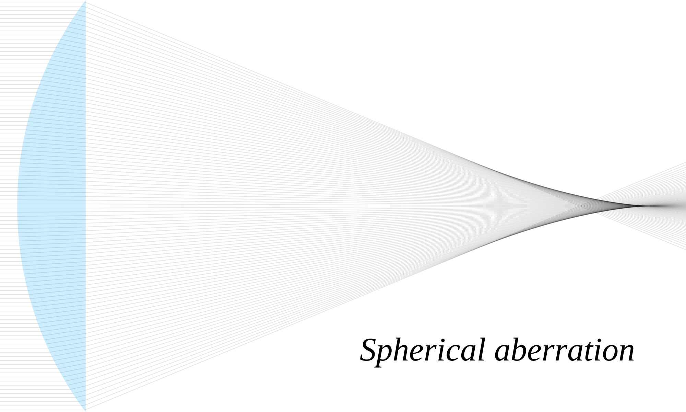
Хроматические аберрации
Коэффициент преломления зависит от длины волны: n = n(λ). Белый свет после линзы разделяется на спектральные пучки — изображения в разных положениях или с разным масштабом.

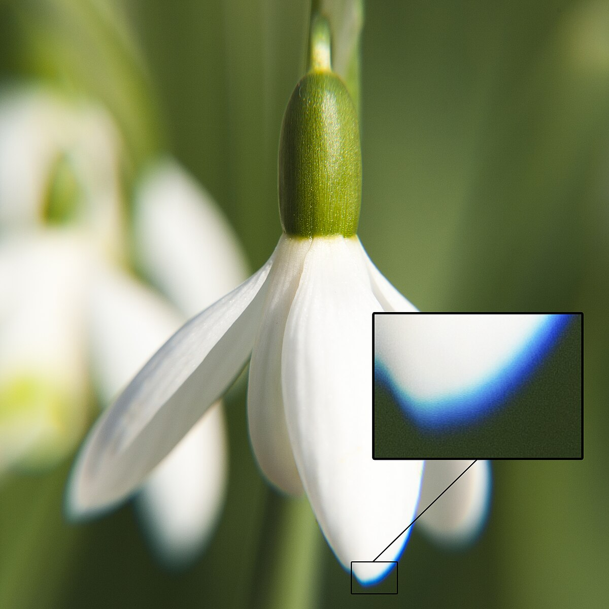
Продольный и поперечный хроматизм
Продольный хроматизм
Спектральные составляющие фокусируются в разных плоскостях вдоль оптической оси. Диафрагмирование уменьшает заметность цветного размытия, но не совмещает фокусы.
Поперечный хроматизм
Масштаб изображения зависит от длины волны, поэтому цветовые каналы расходятся к краям кадра. Его исправляют раздельным радиальным масштабированием каналов.
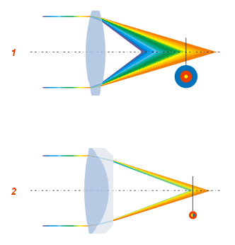
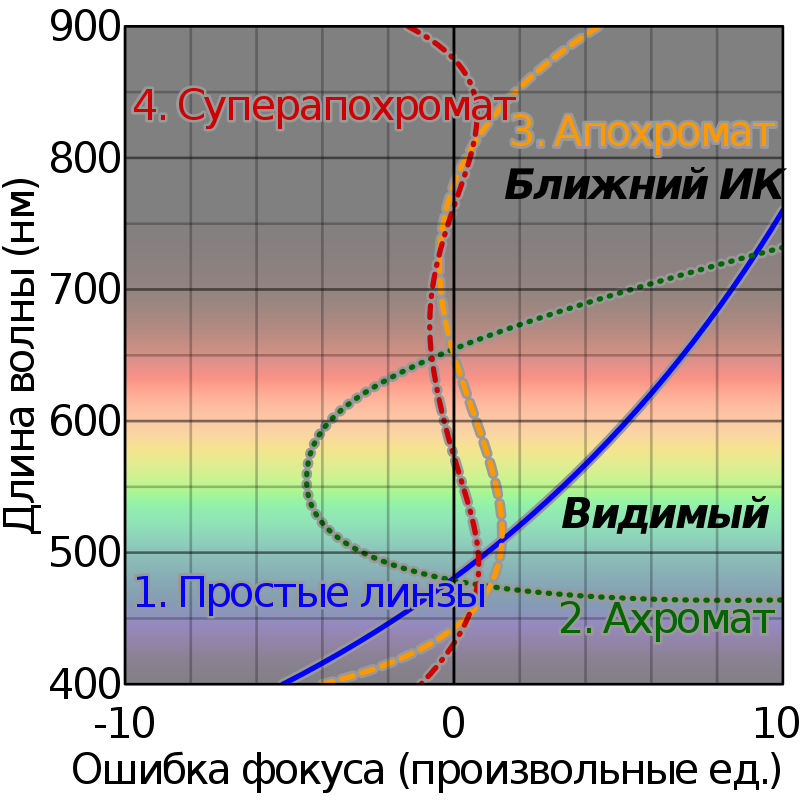
Хроматика на кадре
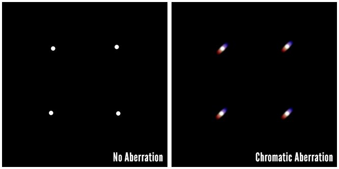
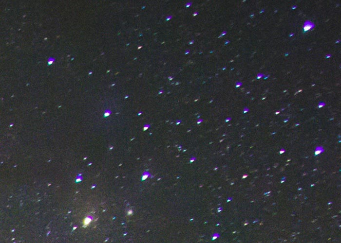
Дисторсия
— аберрация оптической системы, при которой коэффициент линейного увеличения изменяется по мере удаления отображаемых предметов от оптической оси. При этом нарушается геометрическое подобие между объектом и его изображением.
Объектив с исправленной дисторсией называется ортоскопическим, поскольку удовлетворяет требованиям ортоскопичности.
Сферическая
Краевые зоны линзы фокусируют иначе, чем центр. Лечат диафрагмой и дефокусом схемы.
Кома
Точка вне оси → пятно-комета. Вместе со сферой исправляют в апланатах. Децентровка даёт кому и на оси.
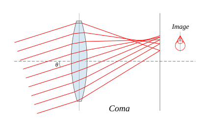
Астигматизм и кривизна поля
Наклонные пучки: сагиттальный и меридиональный фокусы не совпадают (астигматизм); поверхность резких изображений изогнута (кривизна поля).
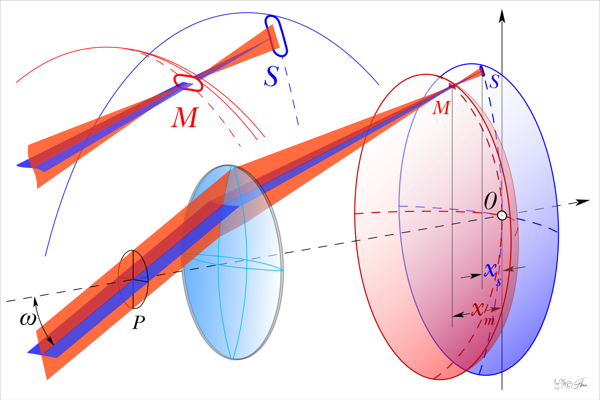
Дисторсия
Дисторсия — аберрация оптической системы, при которой линейное увеличение зависит от угла поля: прямые линии «выгибаются». Положительная (подушкообразная) и отрицательная (бочкообразная) дисторсия — два типичных знака.
В фотограмметрии в каждом пикселе своя поправка: у центра мала, к краям обычно растёт. На схеме стрелки — смещение измеренных координат к идеальным.
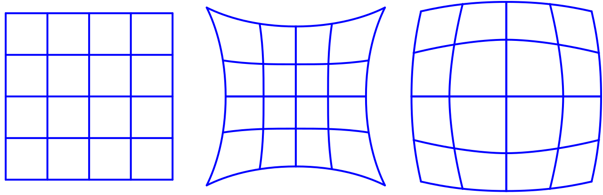
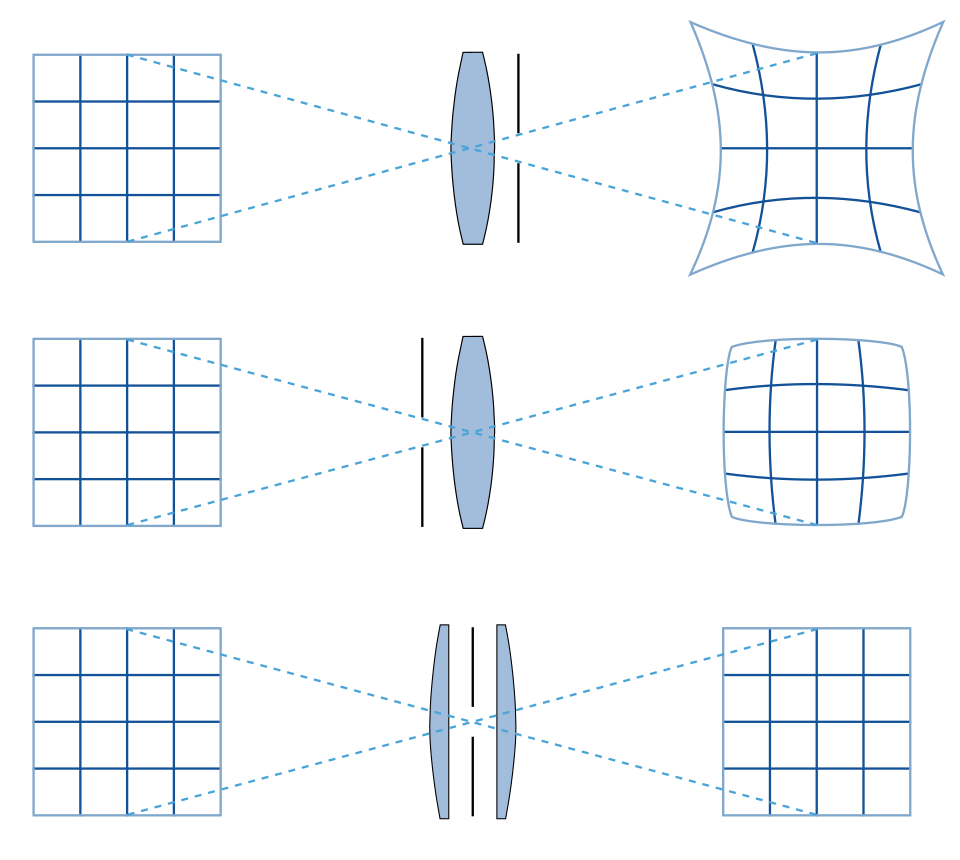
Модель Брауна–Конради
Радиальные k₁…k₃ и тангенциальные p₁, p₂. Параметры находят калибровкой и вносят до ориентирования.
Источники геометрических ошибок
Оптическая схема
Расчётная схема может иметь остаточную дисторсию даже при идеальном изготовлении.
Изготовление
Отклонения радиусов, толщин, показателей преломления и формы поверхностей изменяют ход лучей.
Центрировка и сборка
Поперечное смещение или наклон линз создают несимметричные составляющие ошибок.
Матрица
Смещение и наклон матрицы изменяют главную точку и взаимное положение системы координат снимка и объектива.
Модель дисторсии Брауна–Конради
Модель Брауна–Конради (Brown–Conrady) аппроксимирует суммарное смещение точки небольшим числом коэффициентов. Она описывает систематическую ошибку камеры, а не действие каждой линзы по отдельности.
Общая формула (внутренние параметры и дисторсия)
x′ = cₓ + (x − cₓ) · L(r) + Δxₜ
y′ = cᵧ + (y − cᵧ) · L(r) + Δyₜ
L(r) = 1 + k₁r² + k₂r⁴ + k₃r⁶
Δxₜ = 2p₁xy + p₂(r² + 2x²) Δyₜ = p₁(r² + 2y²) + 2p₂xy
где f (или c) — главное расстояние камеры; cₓ, cᵧ — координаты главной точки; k₁, k₂, k₃ — радиальные коэффициенты; p₁, p₂ — тангенциальные; r² = (x − cₓ)² + (y − cᵧ)²; x′, y′ — измеренные координаты
Методы калибровки камеры
Коллиматорная
Лабораторный коллиматор задаёт известные направления лучей. Метод обеспечивает высокую точность и не требует удалённых объектов.
Плоское поле
Камера снимает плоскую мишень из разных положений. Координаты узлов мишени известны или заданы её геометрией.
Пространственное поле
Камера снимает набор опорных точек с известными трёхмерными координатами и различной глубиной.
Самокалибровка
Внутренние параметры оцениваются одновременно с внешним ориентированием и координатами связующих точек съёмочного блока.
Калибровка в фотограмметрической обработке
f (или c) — главное расстояние
Расстояние от задней главной точки до плоскости снимка в модели камеры. Уточняют калибровкой: номинал объектива и заводская маркировка недостаточны для точных измерений.
cₓ, cᵧ — главная точка
Координаты точки прокола перпендикуляра из центра проекции на плоскость снимка (часто обозначают x₀, y₀). Смещение матрицы или оправы сдвигает cₓ, cᵧ; без уточнения лучи пересекаются с систематической ошибкой.
Поправки координат
После оценки f, cₓ, cᵧ и коэффициентов дисторсии измеренные координаты пересчитывают к идеальной центральной проекции до ориентирования и построения модели.
Перспективные искажения
Перспективные искажения определяются положением центра проекции относительно объекта. Изменение фокусного расстояния при неизменной точке съёмки изменяет границы кадра, но не взаимное перспективное положение точек.
Виньетирование
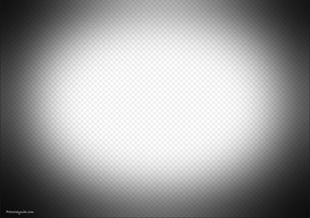
Потеря контраста · ЧКХ
Частотно-контрастная характеристика: контраст изображения / контраст оригинала на данной частоте.
Байонет
Байонет — разъёмное механическое соединение объектива с корпусом камеры, которое фиксирует положение объектива относительно матрицы и может содержать электрические контакты управления и обмена данными.
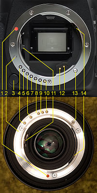
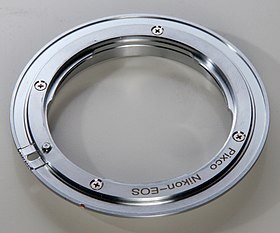
Рабочий отрезок
Рабочий отрезок — расстояние от опорного торца оправы до главной фокальной плоскости приёмника излучения.
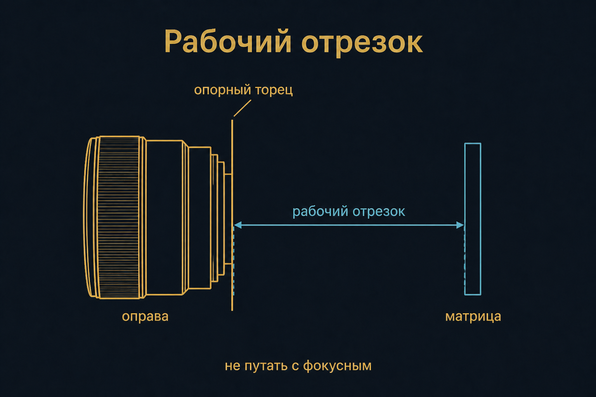
Объектив с коротким задним отрезком нельзя напрямую установить на камеру, которой требуется большее свободное пространство между оправой и матрицей.
Вопросы по теме «Объектив»
- Чем центральная проекция отличается от ортогональной?
- Какие величины связывает формула тонкой линзы?
- От каких плоскости и точки измеряют главное фокусное расстояние?
- Как размер матрицы и фокусное расстояние определяют угол поля зрения?
- Как связаны диаметр входного зрачка, фокусное расстояние и диафрагменное число?
- От каких параметров зависят передняя и задняя границы ГРИП?
- Почему для макросъёмки объектив удаляют от матрицы и как это влияет на экспозицию?
- Чем продольный хроматизм отличается от поперечного?
- Какие составляющие дисторсии описывает модель Brown–Conrady?
- Какими методами калибруют камеру и как применяют результаты к измеренным координатам?